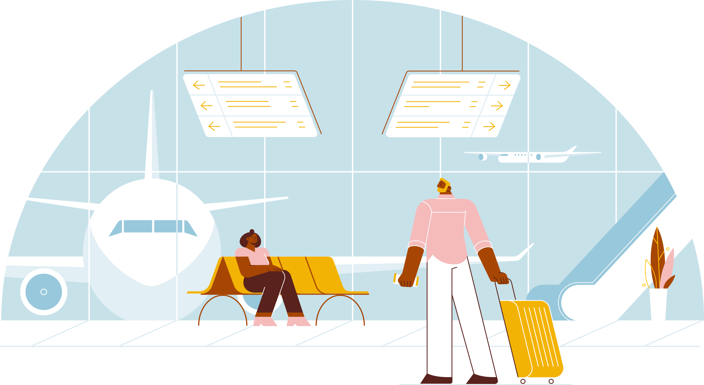

Review Mauritius Airport Transfer
Our number one aim at Mauritius Airport Transfer is to improve your travel experience with our one-of-a-kind and unrivaled approach to assisting our customers in getting to their dream destination.
All of our drivers, back-office employees, and other members of the Mauritius Airport Transfer Team are dedicated to ensuring that you are 100% happy and satisfied with our services.
We strive for complete client satisfaction from the moment you contact us.
Please leave us a honest review or recommendation below.

What Our Customers Have Said About Us
@anita_scru9
Perfect Service
I'd like to compliment the Mauritius Airport Transfer driver for a fantastic journey. Furthermore, the high level of service we experienced at such a low price is out of this world. Without a doubt, when we return to Mauritius, we will seek your services again. Highly recommended.
@brytest_original
Excellent Transfer Service
The one missing component of our trip was getting a cab from the airport to our Mauritius resort. We booked with Mauritius Airport Transfer and were greeted at the airport by their driver. He was excellent, friendly, and provided us with several useful pieces of advice as he took us to our resort. We also utilized Mauritius Airport Transfer to return to the airport. Overall, we are really pleased with the service and would highly recommend it.
@tariBeatri6
Very Affordable Price For transfer
Mauritius Airport Transfer provides an excellent taxi service. With a few clicks, I was able to reserve a cab and it came within 10 minutes. The driver was kind and efficient, and the pricing was cheap. I would highly suggest Mauritius Airport Transfer to anybody searching for an airport taxi!
@naila_missat
Cheap Price But Not Cheap Service
Mauritius Airport Transfer's pricing was really reasonable, and I believe they over-delivered for the money that my husband and I spent. We took a taxi from Trou Aux Biches to SSR airport for 30 euros. I strongly suggest this taxi service to anybody wanting to save money on a taxi service!
@annamarchand99
Quick Transfer Service and Fair Prices
I sought cab quotes from numerous island taxi providers. Mauritius Airport Transfer, on the other hand, provided me by far the best pricing for a journey from the airport to Grand Baie. The service was excellent, and I couldn't have been happier for the amount I spent.
@deepak_chana9
Professional And Trustworthy Service
At the airport, you will be greeted by safe drivers. Expect a nice journey in a clean, contemporary vehicle at a very reasonable price, with payment made straight to the driver.
All of the drivers we had were really polite and helpful.
We had to adjust our plans with one of the transfers, but it was no problem- I sent Charles a quick WhatsApp message, and he responded a few seconds later to confirm our alternate pick-up date, despite the fact that it was a Sunday...- Thank you very much, Charles. I can only recommend this firm highly!
@owen_donat33
Quick and Effective Service
Yesterday, my girlfriend and I sought a price for an airport shuttle to LUX Grand Gaube. We received a very nice response and a very reasonable quote within minutes. We were pleasantly surprised to receive the cab within half hour after making the reservation. I strongly advise everyone on the island to use Mauritius Airport Transfer since they will provide you with an honest and inexpensive taxi cost.
@emms_dual
Excellent Taxi and Transfer Service
Everything was organized by Danny. We took the Mauritius Airport Transfer to and from the airport, and they were fantastic. We also reserved them for a day of sightseeing. Sanjay, our driver, was fantastic on our day out. Thank you very much!
@donglitchcen
Friendly and Excellent Tours
Mauritius Taxi Service provides courteous taxi services, good excursions, and competitive pricing for their varied packages. They arrive on time to pick you up at the airport, take you on any excursions you desire. Highly recommended!!
@xion_ming
Very Effective and Professional Service
We reserved a cab service for our hotel transfers during our vacation! Lower cost than the standard transfer service. Excellent service, always on time (even early sometimes), and really polite and professional.
@trentfraten7
Professional Company And Great Service
Dan was pleasant and punctual, and he even brought us to view some of the amazing natural sightseeing of Trou Aux Cerfs Crater when going to the airport because we were running late. When we return to Mauritius, we will contact you. Great service, I recommend Mauritius Airport Transfer to everyone
@shawn_chauncy
Affordable Transfer With High Quality Service
I was stranded at the airport and required transportation to my hotel. The service was excellent, and the pricing was really reasonable. I strongly suggest Taxi airport to anybody in need of a speedy and dependable service.
How To Book A Taxi With Mauritius Airport Transfer ?
By Email
alan@mauritiusairport-transfers.comBy Phone / Whatsapp
+230 5826 4642
By Website
Fill in the Quote Form on the main page of
Mauritius Airport Transfer